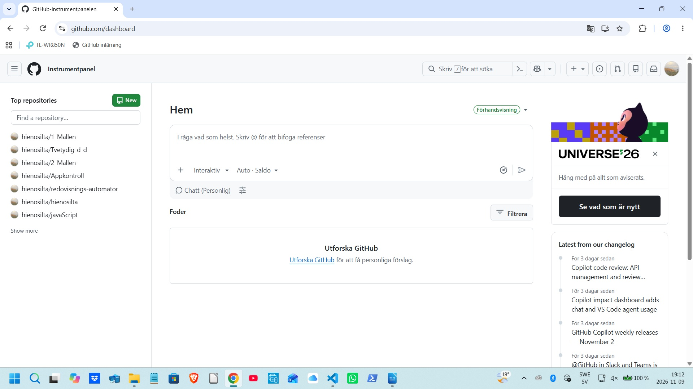

Om du inte klickar dig vidare så kan du i stället nedan fördjupa
dig i hur "GitHub Dashboard" fungerar och hur det kan
användas. Du kan även integrera med VS Code.
GitHub instrumentpanelen - repositories

Det här är en bild som flyter till vänster om texten och den
föreställer toppen av GitHubs repository som du kommer till
när du loggar in med https://github.com/dashboard
Du erbjuds att Sapa nytt arkiv och du kan också gå direkt till det arkiv
som du skapat tidigare och som du nu vill arbeta i.
Om du klickar i bilden ovan så kommer den att förstoras
och visa en mörk skrämmande bakgrund bakom bilden.
GitHub instrumentpanelen - issues
Du kan fråga vad som helst. Skriv @ för att bifoga referenser till
andra användare eller issues.
Du kan också gå från avdelningen Hem till avdelningen Feeds och filtrera
issues baserat på olika kriterier som etiketter,
status eller tilldelad användare.
Sedan kan klicka på
GitHub explore
för att utforska explorer generativ AI och andra intressanta projekt.
GitHub kan dessutom ge dig personliga förslag - baserat på dina aktiviteter och intressen.
Användarprofil
Nästan högst upp till höger i bilden ovan ser du en rund bild som
representerar din användarprofil.